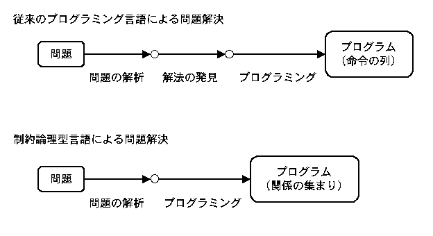

従来のプログラミング言語による問題解決では (1) 問題の解析、(2) 解法の 発見、(3) 発見された解法のプログラミングの3ステップを必要としていた。 制約論理型言語は、問題をどう解くかではなく、どのような問題を解くかを記 述するプログラミング言語である。このため、問題解決を (1) 問題の解析、 (2) 解析された問題のプログラミングという、2ステップだけで行なうことが できる。しかも、従来の言語では解法が想定する場面以外に適用するには新た な解法を発見しなければならなかったのに対して、制約論理型言語では特定の 場面を想定せずに、より柔軟なプログラムを記述できる。

一方、場面に応じた問題解決をシステムが行うため、システムに要求される機 能は増大し、結果的にプログラムの実行効率に問題が生じることがある。特に、 制約を解く、制約評価系の処理効率はプログラム全体の効率にとって重要な影 響を与えるため、この効率化は不可欠である。その点で並列処理を導入するこ とにより、効率化が実現できた。
並列制約論理型言語GDCCは、このような効率的かつ柔軟な問題解決のためのプ ログラミング言語を並列推論マシン上にその処理系を構築することにより、よ り効率的な実行を目指したものである。GDCCの特徴は、世界で初めて非線形代 数方程式を扱える制約論理型言語であり、世界で初めて実際の並列計算機上で 動作する並列制約論理型言語である点である。
並列推論マシンを利用することにより、非線形代数方程式を扱うシステムは 16PEで約6倍の並列効果が得られ、絶対性能についても、実用的なシステムに 必要な性能を達成できた。Vidalによる処理系やSieglによる処理系といった、 他の並列実装と比較してもより効率の良いシステムが得られ、また効率が高い とされているGioviniによる処理系、Backelinによる処理系のような他システ ムと比較しても、複数PEを利用することで、より高速なシステムを実現するこ とができた (次の表を参照)。これらの比較に際しては、比較的処理時間のか かるベンチマークを選んだため、比較対象となる処理系がすべてのベンチマー クを解いているわけではないので、それぞれの処理系でデータが得られている ものについての比較を行っている。
| ベンチマーク | 処理系 | PE数 | ||||
|---|---|---|---|---|---|---|
| 1 | 2 | 5 | 12 | 16 | ||
Katsura-4 (単位: 秒) |
GDCCの制約評価系 Vidalの処理系 Gioviniの処理系 |
8 17 40 |
8 10 -- |
4 4 -- |
3 4 -- |
4 -- -- |
| Katsura-5 (単位: 秒) |
GDCCの制約評価系 Vidalの処理系 |
84 1103 |
82 551 |
27 146 |
17 79 |
24 -- |
| Cyc 4-roots (単位: 秒) |
GDCCの制約評価系 Sieglの処理系 |
1 218 |
1 -- |
1 -- |
1 -- |
1 36 |
| Cyc 5-roots (単位: 秒) |
GDCCの制約評価系 Gioviniの処理系 |
23 143 |
24 -- |
12 -- |
11 -- |
11 -- |
| T-6 (単位: 分) |
GDCCの制約評価系 Backelinの処理系 |
443 90 |
453 -- |
136 -- |
79 -- |
66 -- |
このGDCCを用いて、ハンドリングロボット設計支援システム、階層制約の並列 評価システム、ボロノイ図作成支援システムといった応用システムを試作した。 それぞれの応用システムにおいて、高い機能と高い効率を実現することができ た。たとえば、ハンドリングロボット設計支援システムでは制約論理型言語の 持つ柔軟性を生かした、高機能で高効率な支援系を実現し、また、ボロノイ図 作成支援システムでは、その定義を直接プログラムとして記述することで、高 機能で、ほぼPE台数に比例する台数効果が出るという、高効率のシステムが得 られた。